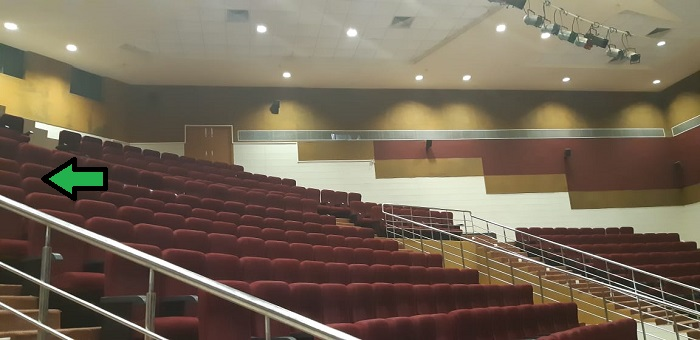

|  |
AboutAn auditorium is a room built to enable an audience to hear and watch performances at venues such as theatres. For movie theatres, the number of auditoriums is expressed as the number of screens. Auditoria can be found in entertainment venues, community halls, and theaters, and may be used for rehearsal, presentation, performing arts productions, or as a learning space. |